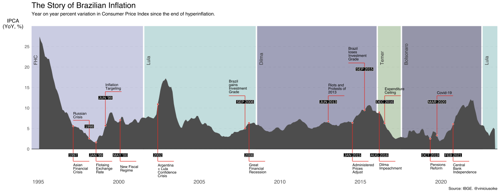

Brazil’s Inflation
Brazil has a long and painful story with inflation. Though technically Brazilian inflation only classified as a hyperinflation during a brief period in the early 1990s1, few countries had to endure such a long-standing period of prolonged and relentless inflation. The chart below shows the monthly percentage change in Brazil’s official consumer price index IPCA. I highlight some important economic and institutional events. Chiefs of the executive are also shaded in through different colors. It’s important to note that Figueiredo was not a constitutionally elected president, but rather the last leader of the Military Regime.
This visualization is heavily inspired by the graphic from the book Saga Brasileira: a longa luta de um povo por sua moeda2, by Miriam Leitão. Total inflation during the “hyperinflation” period surpassed 13 trillion percent! In July of 1994 the ingeniously designed Plano Real stabilizes Brazil’s economy and ends a long period of persistently high inflation. The Brazil post-Plano Real represents a paradigm shift, yet it is not entirely immune to inflation. In the nearly 30 years since the implementation of Plano Real, Brazil has witnessed a cumulative inflation of 560%.
A nuance that is not captured by the graphic is the frequency of currency changes during this era3. Nearly every new economic plan brought about either a change in currency or a price/wage freeze. The dips in the plot coincide with theses moments, marking brief lapses of time when inflation seemed to magically subside, only to return with renewed vigor.
OBS: to better see the plot: right-click > “Open image in new tab”.

Post Plano Real
Even after the ingenious Plano Real, it took some more effort to bring down inflation. The second chart highlights the post-Real Brazil and now presents the year-on-year percent changes in consumer prices. Since Plano Real was implemented in July of 1994, I exclude the first twelve months to avoid contaminating the series with previous hyperinflation.

Brazil’s CPI index dropped steadily after Plano Real and reached its lowest point in decades at the end of the 1990s. The series of economic crisis that began in Asia, spread across other emerging economies and eventually forced the Brazilian Central Bank to devalue the Real and abandon its fixed exchange rate to the USD. Two significant institutional changes were introduced in the late 1990s. First, the adoption of a formal inflation target: starting at 8% and decreasing to 4% in 2001, with a 2% interval of tolerance. Second, the implementation of a new fiscal regime, known as the Law of Fiscal Responsibility, sought to streamline public finance administration and limit spending.
In the 2000s, inflation in Brazil was “higher than comfort”. Despite fiscal surpluses and high interest rates, the country struggled to keep inflation within its revised 4.5% target. The overall outlook of the economy was much more positive. The commodity boom resulted in bigger commercial surpluses, and the country’s fiscal stability and solid institutions made it an attractive destination for foreign investment. Even during the 2008 financial crisis, Brazil remained relatively unscathed.
In the subsequent decade, the looming threat of inflation resurfaced. Facing a slowing economy, the Brazilian government launched an aggressive pro-growth agenda. Government spending rose (with little to no accountability), interest rates were cut, and the Real devalued significantly. New subsidized credit lines and tax reliefs aimed to improve business conditions and foster growth. To contain the rising inflation that resulted from this massive injection of stimulus, arbitrary price controls were implemented. Bus fares, electric energy, and even oil prices were tinkered with to help curb rising prices. In 2015, Brazil was forced to come back to terms with reality: administered prices were increased drastically causing a surge in inflation and a further deterioration of macroeconomic conditions. In August 2016, president Dilma Roussef is impeached and vice-president Michel Temer assumed office.
In the period that followed, inflation was much lower and important fiscal measures such as the Expenditure Ceiling and Pensions Reform were passed. Central Bank independence came in early 2021. The Covid-19 inflation surge was tackled with inordinary high interest rates: in fact, for many months Brazil had the highest real interest rate in the world! After nearly a year of tight monetary policy, the Brazilian Central Bank started to cut interest rates as inflation converged to its long-run target.
Footnotes
Loosely translated: “The Brazilian Saga: the long struggle of a people for its currency”.↩︎
Before 1986, Brazil’s currency was the Cruzeiro, though it had been “updated” several times to accommodate inflation. After the Cruzado Plan, the official currency became the “Cruzado”. In 1989, it transitioned to the “Cruzado Novo” (New Cruzado), following the Verão Plan. With the Collor Plan, in 1990, came a new currency that borrowed the old “Cruzeiro” name. Ultimately, in the lead-up to the Real, Brazil introduced a “virtual currency” named URV and the Cruzeiro was renamed as “Cruzeiro Real”.↩︎